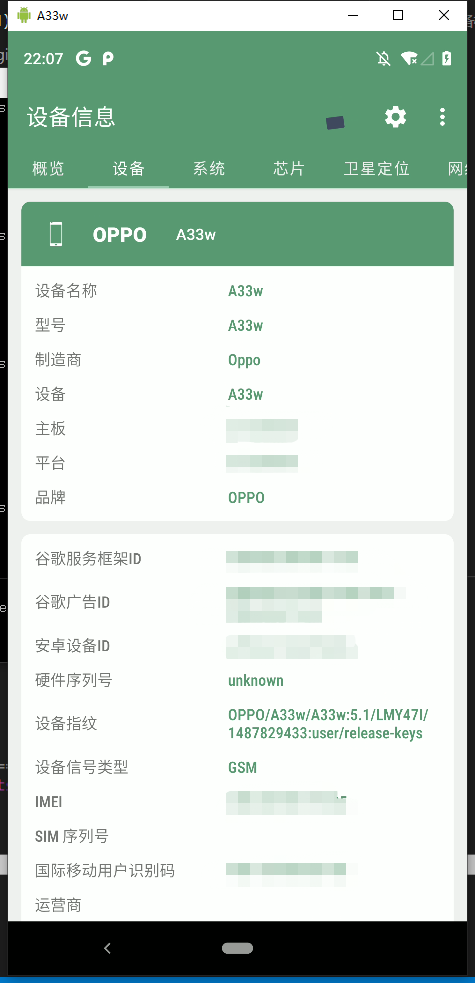
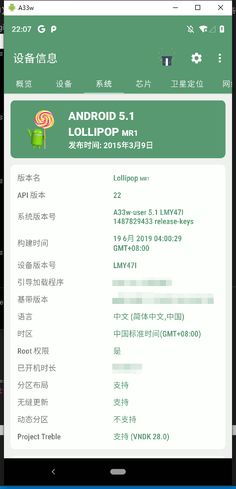

安卓设备模拟（1）基于MagiskHidePropsConf
背景
最近测试应用有设备模拟的需要，没有那么多新的测试机可以换，所以要想想办法模拟下设备。设备模拟准备从硬件信息，软件信息，位置信息三个角度入手。目前的目标是，模拟一个全新的设备，不去测试特定的属性。
修改机型的目标属性/API
安卓应用从系统中读取的关于安卓手机的硬件信息和系统的软件信息，硬件一般是手机开发商相关的，包括机型等，软件信息一般是操作系统版本等。
应用通过api或者各种奇怪的方式去获取这些信息，那么很直接的一个想法就是去修改这些信息的源头，另一个方法就是去hook获取到这些信息的api（对系统的破坏性小一点）。
这里先考虑使用第一种方法，因为这些api可能没那么好cover，并且重新刷写一个系统的代价感觉可以接受，当然还有效率的考虑。
那么说到要修改源头了，那应该修改什么信息呢？之前了解到的是系统属性中ro.product和ro.build分别表示系统的硬件（开发商）和软件属性，这两个属性可以在/system/build.prop中找到（但是后面经过实测发现，通过Magisk模块修改了系统属性之后这个文件中的属性并不会发生改变，究竟修改的属性是放置于哪里，或者模块在哪个环节把系统属性给改了留着下期博客更新），此外在/default.prop中也可以找到一些系统属性，但是并没有这两个值。
经过一番搜寻，发现之前用来改可调试属性的Magisk模块MagiskHidePropsConf可以用来修改系统属性，并且提供了多种预设机型用于设备模拟，后面说明用法以及注意事项。
在这个模块修改的属性中，可以看到其主要是修改了以下的属性，至于是否还有其他属性会影响到设备信息的判断，等后续的博客再进行研究：
1 | ro.product.brand |
MagiskHidePropsConf用法
- 安装：github下载release的模块文件，Magisk中安装；
- 使用：命令行用法为在shell中启动交互终端
1 | terminal $ adb shell |
设备模拟
进入到交互终端
选择模拟设备指纹功能，选项为
1 - Edit device fingerprint；选择需要模拟设备的设备指纹，选项为
f - Pick a certified fingerprint，接着依次选择厂商和机型。设备指纹的表示如：Samsung Galaxy A90 5G SM-A908B (9):samsung:SM-A908B=samsung/r3qxx/r3q:9/PPR1.180610.011/A908BXXU2ASK5:user/ release-keys__2019-11-01回到初始的交互终端，选择
3 - Device simulation，默认的话所有的属性都是disable的状态，选择想要修改的属性，这里选择根据设备指纹改掉所有的属性：a - Enable/disable all props按指示重启即可
效果
- 在某APP上测试，成功识别为未知设备，但是无法识别出修改后的机型，不过识别成陌生设备这个目的是达到了；
- 使用某手机信息软件，已经变成了目标机型的形状；


使用MagiskHidePropsConf的注意事项
在以下条件可能导致模块的服务端启动失败，但是没有严格测试过：
- Magisk不可以开启Magisk隐藏；
- 不可以和隐藏root的模块（Shamiko）一起使用；
- 选择模拟设备指纹功能后，有一项
v - Use vendor fingerprint (for Treble GSI ROMs)不能选；
1和2导致的服务启动失败可以通过调整Magisk解决，3可以通过脚本启动模块交互，并重置所有配置解决：
1 | terminal $ adb shell |